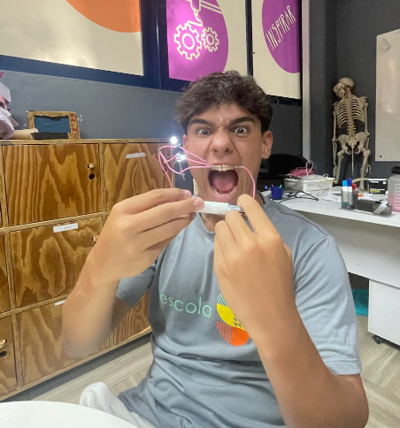
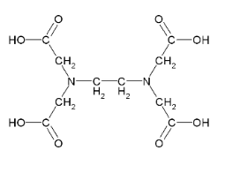

Página Inicial
Humanas
Linguagens
Matemática
Natureza
Técnico ▼
Desenvolvimento de Sistemas
Implantação e Manutenção de Sistemas
Modelagem de Sistemas
Esta atividade tem como objetivo explorar e compreender as ideias evolucionistas, conhecendo os principais cientistas e entendendo os conceitos fundamentais do evolucionismo, como a seleção natural. O tema central é a teoria científica da evolução, que explica como as espécies mudam ao longo do tempo através de processos como seleção natural, mutação e hereditariedade. A criação de um meme proporciona uma forma criativa de compartilhar informações, enquanto o uso de um simulador ajuda na compreensão prática e visual do processo evolutivo. No entanto, seria benéfico incluir uma discussão mais ampla sobre as implicações éticas, sociais e filosóficas da evolução para uma reflexão crítica mais profunda. Habilidades Desenvolvidas: C2 H11
Revisão dos principais tópicos da química orgânica: Carbono, Representações, Petróleo, Classificação Carbono, Hidrocarbonetos, Ligação Sigma e Pi. Habilidades Desenvolvidas: H3, H4 e H5

Esta aula tem como objetivo aprofundar o conhecimento sobre as ideias evolucionistas, os cientistas relevantes e os conceitos fundamentais do evolucionismo, além de envolver uma atividade prática relacionada a circuitos. O assunto principal é a teoria da evolução, abordando suas ideias fundamentais e os cientistas importantes nesse campo. A integração entre teoria e prática proporciona uma abordagem dinâmica e engajadora para os alunos. No entanto, é importante garantir que todos os alunos tenham os recursos e o tempo necessários para realizar a atividade prática de forma satisfatória, visando a eficácia do aprendizado. Habilidades Desenvolvidas: C02 H06 C06 H34

Lista para classificar cada composto orgânicoAs cadeias carbônicas são as estruturas básicas que compõem os compostos orgânicos, sendo formadas, basicamente, por átomos de carbono e hidrogênio .Pude praticar e desenvolver melhor meus conhecimentos sobre as cadeias carbônicas. Habilidades Desenvolvidas: H3, H4 e H5